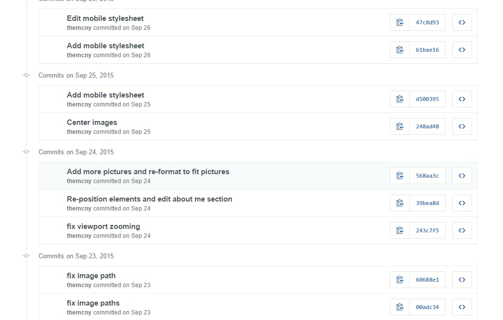
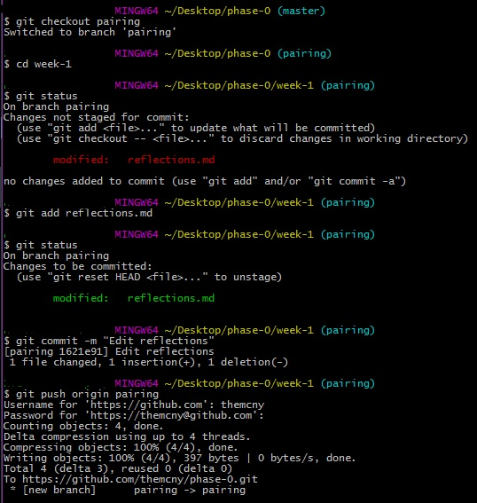

Before getting into the nitty gritty of programming and beginning any kind of projects, there are some important basics to talk about. These basics will aid developers in working on large scale projects and in working with other developers.
What are the benefits of version control?
Version control tells a user when edits were made to a file, what edits were made, who made those edits, and why edits were made to the file. It allows a user to know exactly what functions have been added to a particular program. It also facillitates the unification of files which allows many developers or users to edit and modify a single project or file while also keeping track of all those changes. Without version control, trying to keep track of multiple changes made by many users would be a complete mess.
How does git help you keep track of changes?
As a version control system, git gives a history of the content changes made to a file. As you move along in your work, using the commands git add [file name] and git commit -m "[message]" will help you as a user keep track of your changes. The image below is an example of the commit history of a particular file. As you can see, the commit messages tell you what changes were made and when they were made.
Why use GitHub to store your code?
Using GitHub to store code keeps all your code online. This allows other developers to look at your work and work on projects with you more easily.
Below is a picture of going through the editing process from making a change, to adding, to committing, to pushing to GitHub.
